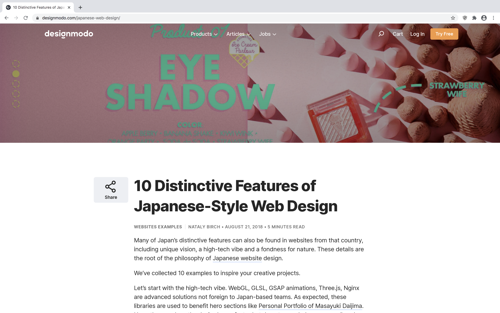
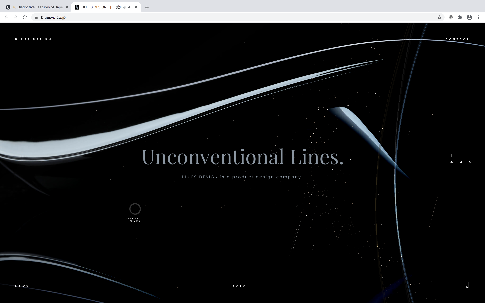
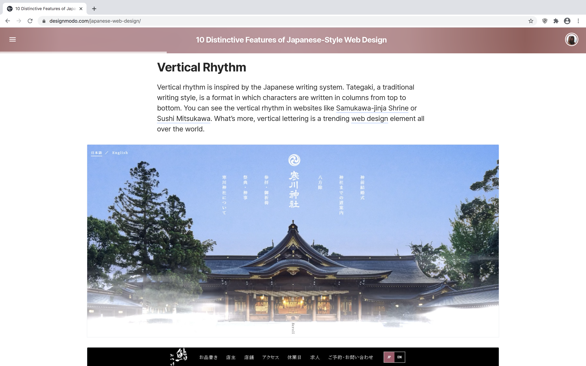

Primary Client Research
The research conducted on the Nagoya Arts Network International consisted of looking through newsletters and their current online presence. Aside from that, other valuable information was gathered from across the web.
About the Ministry
The Nagoya Arts Network International (NANI) is an art ministry headed by missionaries in Nagoya, Japan. Their goal is to open doors for Gospel-centered connections and relationships through art. Things such as art exhibitions and discussions are valuable ways of creating meaningful connections with the community. This ministry is used to build upon other church planting endeavors as well.
Art Events
A variety of artistic events are held to connect with the community. There are activities such as “exhibitions, artist residencies, and discussion groups.”

Current Website
There is currently no dedicated website for Nagoya Arts Network International. The only source of official online presence is a page on mtw.org (a large, global missionary organization).

Secondary Research
An Interesting Situation
According to a newsletter from February 2020 (from the missionaries who run NANI), there are no other visual art ministries in Nagoya, Japan. It appears that this group is the only one of their kind in the area.
Japanese Website Design
As a Westerner, designing a website for use in Japan requires a knowledge of what the Japanese like to see in their websites. The website designmodo.com provided a list of “10 Distinctive Features of Japanese-Style Web Design” that will be extremely useful in designing a website for the Japanese culture. Below are some relevant takeaways that could be applied to the NANI site.
Technological Innovations
Japan loves technological innovations. They’re already on the cutting-edge of technology, and their preference for web design is no different. The site provided links to several mind-boggling websites that truly go above and beyond with their design. Though these innovations are very respectable, it doesn’t seem like they’d be a good fit for the ministry’s website. The average user may not be familiar with how to maneuver a fancy website, so it’s probably best to keep it simple so everyone can use it with ease.
Unusual Coloring
Sometimes, the best solutions don’t always seem conventional. Some Japanese sites use colors that don’t initially seem to go together to create effective solutions. If done correctly and with good purpose, unusual color combinations can lead to a stronger solution. Will this be the case for the NANI website? Maybe, but maybe not.

Vertical Writing
In the traditional Japanese writing style, Tategaki, the characters are written vertically. This may be a powerful aspect to include in certain parts of the ministry’s site to really appeal to the Japanese culture, both past and present.
Nature
Nature is highly valued in Japan, and including it in a website can really draw the user in. This goes hand-in-hand with art, as nature is often a big influence.


Other Solutions
By conducting research on some other international art ministries, two beneficial examples were found.
Heart Sounds International
The Heart Sounds International ministry is another ministry that uses art to make connections and share the Gospel with non-western countries. Like the Nagoya Arts Network International, art is used to empower both local believers and missionaries to effectively witness and connect with the communities around them. Heart Sounds International promotes culture-based worship music and art to bring genuine worship back to the Creator. What stood out here is that this ministry seeks to adapt to the culture they’re ministering to instead of focusing primarily on Western forms of worship. This should be no different for the arts in Japan. Including Western art is by no means a bad thing, but the Japanese culture should never be neglected.
As a website, they provided relevant information about their goals and as to what the ministry is about. They have beneficial links to other sites, such as links to their social media platforms and to their partner ministry (OM Arts). Another interesting aspect of the site is the inclusion of a “What Others Say” page. Here, they have provided quotes from several people who have been encouraged by the ministry. Having a testimony page seems like a very good idea. For those interested in seeing what the ministry is about and how it influences others, it can be beneficial to have the thoughts of those who have already been affected.
Artists in Christian Testimony International
Artists in Christian Testimony International seeks to achieve the same type of goals as the previous ministry and of Nagoya Arts Network International. They seek to send out and prepare artists to share the Gospel with those around the world.
As for their website, there’s really not any information it lacks. Everything you could possibly want to know about the organization is on the website. It has links to a variety of resources, a way to donate, and a form to sign up for newsletters. From an informational standpoint, they’ve got everything covered. However, when looking over the website, it can feel a little crowded. Some of the information can be combined into one page instead of having separate pages for very similar bits of info. As for organization, there’s nothing that immediately provides the user with a solid starting point. The layout isn’t very convenient.
Takeaway
Overall, as a takeaway, my site design needs to provide adequate and relevant information in an organized fashion. It needs to be clear to the user as to what they’re looking at, and it needs to be easy to navigate.
Statistics
In looking for statistics to further support a solution, statista.com revealed a few points of interest. According to the website, a vast majority of the Japanese internet users access the internet through a smartphone or PC. Based on that statistic, it may be helpful to keep in mind what kind of platform the user will be on. The website needs to be organized in a way that can be easily used on any platform.
On another note, Japanese art is often influenced by some form of Shinto or Buddhist beliefs. Christianity only makes up 1.5% of the population of Japan. Including Christian messages in art is rather foreign to the Japanese, so having Christian themes and messages on NANI’s website will be equally as intriguing.
Interviews
To gain better insight and a deeper perspective on my ministry, I interviewed the client and a potential website user.
Client
I had the opportunity to interview the missionary in charge of setting up NANI, Peter Bakelaar. In my talk with him, I received excellent details on the goals and desires of the NANI ministry.
To summarize the overall goal, NANI’s mission is to share the love of Christ by engaging with and inspiring artists. These connections give Japanese Christians the opportunity to use their abilities to reach out to and encourage others in their spiritual journeys.
Christian artists will have the opportunity to share their work in a variety of events. For example, one such event is called Art and Soul. This event will give Christian artists the opportunity to share some of their work and discuss the ideas behind it. This further plays into NANI’s goal of forming meaningful connections through art.
An art residency is another type of event that NANI seeks to use. In these residencies, artists from other cultures will interact with, collaborate with, and work with Japanese artists. This provides the opportunity to show work, talk about it, and asking questions.
In the long run, NANI is designed to be administrated and sustained by the Japanese instead of missionaries. Having a shared interest between the Christians and culture is a crucial part in forming meaningful relationships.
As for the audience, the ones I had selected were the same ones that Peter had in mind. The website needed to be one for the people, one that’s inviting and informative. Having a calendar of upcoming events and section for people’s stories were two features that needed to be present. He said that the website needed to be inviting, one that felt authentic and real. After all, that’s exactly what the ministry is—a genuine, real art community. He also said that Christian wording should be avoided. This wouldn’t be something that the Japanese would understand, so it may be best to stay away from it.
The other audience that needed to be considered is the church, be that in the United States or in Japan. When viewing a site for a ministry, one would expect to see the Gospel and Biblical terms referenced and presented. To not see that would be absurd (so some may think). This is where it gets tricky. To help guide me, he gave two questions to think about: How do I publicly communicate both sides of the work to those I’m inviting and to those who are looking for Christian part of it? How can the church get an accurate picture of NANI? These questions don’t have easy answers, but they must be addressed.
Overall, Peter’s goals for the site lined up pretty well with what I had planned. As supported by his statements, the site will include a calendar of upcoming events, a testimony page, an About Us page, and a contact page, among others. The website must stay true to the Japanese culture and their interests, so designing for their needs is of critical importance. After all, NANI will be run primarily by the Japanese in the future.
User (United States)
Janet Jenkins is on the missions committee at my home church, a church that supports the Bakelaars' ministry. I interviewed her to get some perspective on what she would like to see on the ministry’s website.
When asked what all she’d like to see and what all she’d expect from the ministry’s website, she brought up some interesting points. First of all, she’d like to see some of the things they are doing. Whether that be an art exhibition or something else, as long as she could see it, she’d be pleased. She said she’d also like to see testimonies on the website. Stories and pictures of the ministry’s influence were of value to her. Lastly, she’d like to see prayer requests and answers.
Based on these desires, having photos of exhibitions, artists, etc. is of utmost importance. This gives the church a visual of what takes place at the ministry. A testimonies page should also be included. Having testimonies and stories not only benefits the Japanese, but also viewers across the globe. The inclusion of a prayer request page is a bit tricky. This goes back to what Peter said about excluding Christian wording. The website is primarily an art website and should focus on reaching out to the Japanese by staying true its primary function.
Overall, the primary reason Janet said she would visit the website is to check up on the ministry and keep up with the Bakelaars. This further shows that a contact page is of utmost importance.
User (Japan)
Sarah Leaf is a resident of Japan who would likely use the NANI website once it’s published. In an email interview with her, she was given two questions:
- What would you like to see on the NANI website? Are there any specific features you would be looking for?
- What would be the primary reason you would visit the website to start with? Information? Sign up for an event?
In response, she replied:
- “I think overall I would be looking for visuals to get a good idea of what NANI is about and Peter's vision for it (i.e. photos of the gallery itself, some of Peter's work, photos of Peter and Diane, etc). I think it would also be really cool if there could be some kind of subscription option to stay up to date on events, but that may be a feature that could be added at a later time.”
- "I would use it to: Introduce the gallery to friends and family, keep up to date on events and get information on them, learn more about Peter himself and his vision for NANI, learn more about the artists that are and will be presenting in the gallery, see Peter's work as well as other artists' work"
Overall, her answers aligned perfectly with the goals established for the website. With this affirmation, the website was truly headed in the right direction.